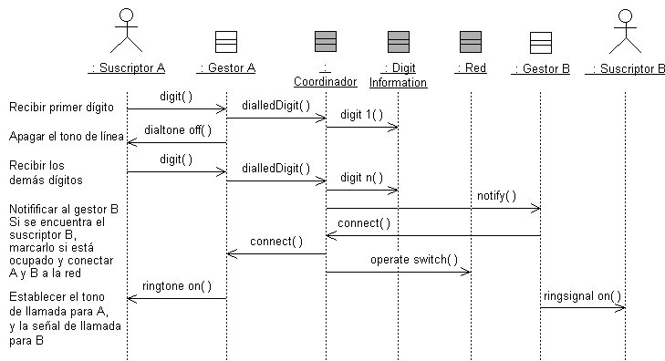
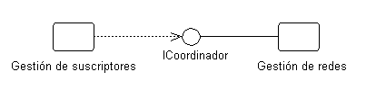
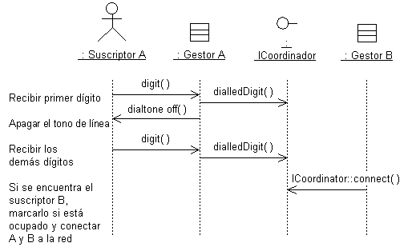
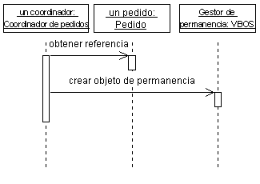
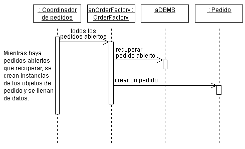
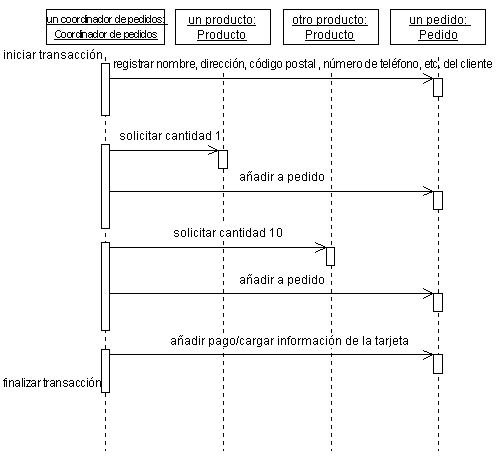
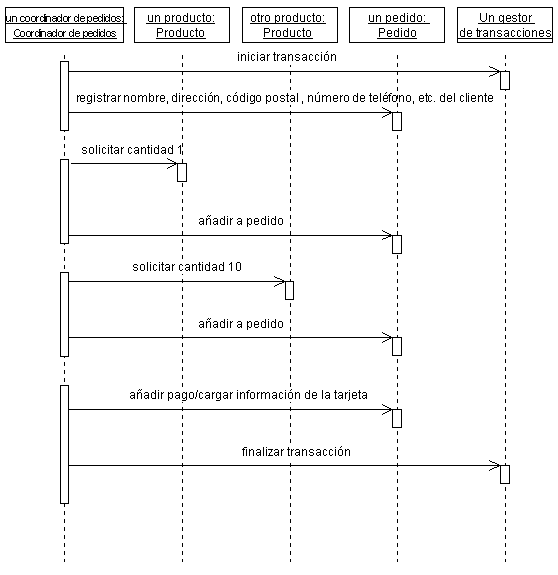
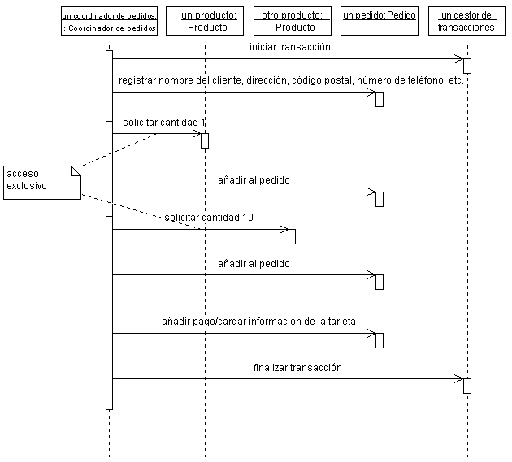

|
Crear realizaciones de caso de uso
|
Producto de trabajo: Realización de caso de uso de diseño ofrece una
forma de rastrear hacia atrás el comportamiento en el modelo de diseño hasta el modelo de caso de uso , y organiza
colaboraciones en el modelo de diseño alrededor del concepto de caso de uso .
Cree una realización de caso de uso de diseño en el modelo de diseño para cada caso de uso que se va a diseñar. El
nombre de la realización de caso de uso de diseño debe ser el mismo que el del caso de uso asociado, y se debe
establecer una relación "realiza" desde la realización de caso de uso de análisis con el caso de uso asociado.
|
Describir interacciones entre objetos de diseño
|
Para cada realización de caso de uso , debe ilustrar las interacciones entre los objetos de diseño participantes
creando uno o más diagramas de secuencia. Las primeras versiones de éstas pueden haberse creado durante Tarea: Análisis de caso de uso . Estas "versiones de análisis"
de las realizaciones de caso de uso describen las interacciones entre las clases
de análisis. Deben evolucionar para describir las interacciones entre los elementos de diseño.
La actualización de diagramas de secuencia implica los pasos siguientes:
-
Identifique cada objeto que participe en el flujo del caso de uso . Para ello se crea una instancia de las clases y
los subsistemas de diseño identificados en Tarea: Identificar elementos de diseño. En los sistemas en tiempo
real, también se identificarán las instancias de cápsula que participan en el flujo del caso de uso .
-
Represente cada objeto participante en un diagrama de secuencia. Cree una línea de vida para cada objeto
participante en el diagrama de secuencia. Para representar los subsistemas de diseño, tiene varias opciones:
-
Puede mostrar instancias del subsistema en el diagrama de secuencia.
-
Puede utilizar las interfaces realizadas por el subsistema. Esta opción es la preferida en aquellos casos
en los que desea mostrar que cualquier elemento de modelo que realiza la misma interfaz se puede utilizar
en lugar de la interfaz. Si elige mostrar interfaces en el diagrama de secuencia, tenga en cuenta que
deseará garantizar que no se envíen mensajes desde la interfaz a otros objetos. Esto se debe a que las
interfaces encapsulan completamente la realización interna de sus operaciones. Por lo tanto, no podemos
estar seguros de que todos los elementos de modelo que realizan las interfaces estarán diseñados de la
misma forma. Por lo tanto, en los diagramas de secuencia no se deben mostrar los mensajes que se envían
desde las interfaces.
-
Puede utilizar el componente para representar el subsistema en diagramas de secuencia. Utilice el
componente en aquellos casos en los que desee mostrar que un subsistema específico responde a un mensaje.
En este caso, puede mostrar los mensajes que se envían desde el componente a otros objetos.
Tenga en cuenta que estos son diagramas de secuencia a nivel de sistema, que muestran cómo interactúan las
instancias de elementos de diseño de nivel superior (normalmente subsistemas e interfaces de subsistema). Los
diagramas de secuencia que muestran el diseño interno de los subsistemas se producen de forma independiente,
como parte de Tarea: Diseño de subsistemas.
-
Tenga en cuenta que las interacciones de los objetos activos se describen normalmente utilizando colaboraciones
de especificaciones y máquinas de estado. Aquí se utilizarán para mostrar cómo pueden enviar mensajes a los
objetos activos los otros elementos del sistema en una realización de caso de uso de mayor tamaño. En una
utilización típica, los objetos activos se encapsulan dentro de los subsistemas para ejecutar esta tarea, de
forma que la realización de los casos de uso consiste en un conjunto de subsistemas que interactúan. Las
interacciones definen las responsabilidades y las interfaces de los subsistemas. Dentro de los subsistemas, los
objetos activos representan hebras de ejecución concurrentes. Los subsistemas permiten dividir el trabajo entre
los equipos de desarrollo, utilizando las interfaces como contratos formales entre los equipos. En los sistemas
en tiempo real, se utilizarán Producto de trabajo: Cápsulas para representar los objetos
activos.
Una nota secundaria sobre cómo mostrar los mensajes que surgen de los subsistemas: la restricción de los
mensajes sólo a las interfaces reduce el acoplamiento entre los elementos de modelo y aumenta la elasticidad
del diseño. Siempre que sea posible, intente hacerlo de esta forma y, en aquellos casos en los que existan
mensajes que emanan de los subsistemas a elementos de modelo que no son interfaces, busque oportunidades de
cambiarlos por mensajes a interfaces, para mejorar así el desacoplamiento en el modelo.
-
Represente la interacción que tiene lugar con los actores. Represente cada instancia de actor y cada objeto externo
con el que interactúan los objetos participantes mediante una línea de vida en el diagrama de secuencia.
-
Ilustre el envío de mensajes entre los objetos participantes. El flujo de sucesos empieza en la parte superior del
diagrama y continúa hacia abajo, indicando un eje cronológico vertical. Ilustre el envío de mensajes entre objetos
creando mensajes (flechas) entre las líneas de vida. El nombre del mensaje debe ser el nombre de la operación
invocada por el mensaje. En las primeras fases del diseño, no se asignan muchas operaciones a los objetos, por lo
que puede que tenga que dejar fuera esta información y dar al mensaje un nombre temporal; estos mensajes se dice
que están "desasignados". Posteriormente, cuando encuentre más operaciones de los objetos participantes, deberá
actualizar el diagrama de secuencia "asignando" estas operaciones a los mensajes.
-
Describa qué hace un objeto cuando recibe un mensaje. Para ello, adjunte un script al mensaje correspondiente.
Coloque estos scripts en el margen del diagrama. Utilice texto estructurado o pseudocódigo. Si utiliza
pseudocódigo, asegúrese de utilizar constructos en el lenguaje de implementación, para que la implementación de las
operaciones correspondientes sea más sencilla. Cuando la persona responsable de la clase de un objeto asigna y
define sus operaciones, los scripts del objeto proporcionarán la base para ese trabajo.

El comportamiento del caso de uso ejecutado por los objetos se documenta en un diagrama de secuencia.
Si tiene el comportamiento distribuido entre los objetos, debe decidir cómo se controlará el flujo. Los objetos se han
encontrado suponiendo que interactuarán de cierta forma en la realización del caso de uso y que tienen un determinado
rol. Cuando distribuya el comportamiento, puede empezar a probar estas suposiciones. En algunas partes del flujo,
deberá utilizar una estructura centralizada; en otras, será preferible una estructura centralizada. Para ver una
definición de estas variantes y recomendaciones sobre cuándo utilizar cada tipo de estructura, consulte Técnica: Diagramas de secuencia.
Puede que necesite nuevos objetos en este punto, por ejemplo, si utiliza una estructura centralizada y necesita un
nuevo objeto para controlar el flujo. Recuerde que todo objeto que añada al modelo de diseño debe cumplir los
requisitos creados en el modelo de objeto.
Durante la Tarea: Análisis de la arquitectura, se han identificado mecanismos de
análisis. Durante la Tarea:
Identificar los mecanismos de diseño, se han perfeccionado mecanismos de análisis en mecanismos de diseño, se ha
capturado la correlación de los mecanismos de análisis con los mecanismos de diseño en el Documento de arquitectura de software, y los mecanismos de diseño se
han documentado en las Directrices específicas del proyecto.
Durante esta tarea, Diseño de caso de uso , todos los mecanismos de diseño aplicables se han incorporado en las
realizaciones de los casos de uso . El diseñador encuesta los mecanismos de diseño disponibles y determina cuáles
se aplican a la realización de caso de uso que se está desarrollando, según las recomendaciones y las directrices
documentadas en el Documento de arquitectura de software y las Directrices específicas del proyecto.
Nota: puede que se haya identificado un mecanismo de diseño aplicable en la Tarea: Análisis
de caso de uso , durante la que se han "etiquetado" clases de análisis con un determinado mecanismo de análisis, lo
que indica que se debe manejar en el diseño una determinada parte de la funcionalidad. En tal caso, los
mecanismos de diseño aplicables son aquellos asociados con los mecanismos de análisis con los que se han etiquetado las
clases de análisis que participan en la realización del caso de uso .
El diseñador incorpora los mecanismos de diseño aplicables en las realizaciones de caso de uso , e incluye los
elementos de diseño necesarios y las interacciones de elementos de diseño en las realizaciones de caso de uso siguiendo
las reglas de uso documentadas en las Directrices de diseño.
Debe describir cada variante del flujo en un diagrama de secuencia aparte. Los diagramas de secuencia generalmente son
preferibles al diagrama de comunicación, ya que tienden a ser más fáciles de leer cuando el diagrama debe contener el
nivel de detalle deseable cuando se diseña el sistema.
Empiece describiendo el flujo básico, que es el flujo de sucesos más común o más importante. A continuación, describa
variantes como, por ejemplo, los flujos excepcionales. No es necesario describir todos los flujos de sucesos, siempre
que emplee y ejemplifique todas las operaciones de los objetos participantes. A partir de aquí, se pueden omitir los
flujos muy triviales como, por ejemplo, aquellos relacionados sólo con un objeto.
Estudie el caso de uso para ver si hay variantes de flujo distintas de las descritas en el análisis y la captura de
requisitos como, por ejemplo, aquellas que dependen de la implementación. Cuando identifique nuevos flujos, describa
cada uno en un diagrama de secuencia. A continuación se proporcionan ejemplos de flujos excepcionales.
-
Manejo de errores. Si una interfaz informa de que se ha producido un error en la comunicación con algún
sistema externo, por ejemplo, el caso de uso debe tratar con él. Una solución posible es abrir una nueva ruta de
comunicación.
-
Manejo de tiempo de espera. Si el usuario no responde en un determinado periodo, el caso de uso tomará
medidas especiales.
-
Manejo de entrada con error en los objetos que participan en el caso de uso . Los errores como este pueden
provenir de una entrada incorrecta del usuario.
Puede describir una vía de acceso alternativa de un flujo como un flujo opcional, en lugar de como una variante. En la
lista siguiente se incluyen dos ejemplos de flujos opcionales.
-
Al enviar una señal, el actor decide (entre varias opciones) qué debe hacer el caso de uso a continuación. Por
ejemplo, el caso de uso ha solicitado al actor que responda sí o no a una pregunta, o ha proporcionado al actor
varias funciones que el sistema puede ejecutar en el estado actual del caso de uso .
-
La vía de acceso del flujo varía según el valor de los atributos o las relaciones que hay almacenados. El siguiente
flujo de sucesos depende del tipo de datos que se va a procesar.
Si desea que un flujo opcional, o un subflujo completo, se perciba especialmente, utilice un diagrama de secuencia
aparte. Cada diagrama de secuencia aparte debe referenciarse desde el diagrama de secuencia del flujo de sucesos
principal utilizando scripts, texto al margen o notas para indicar dónde se produce el comportamiento de subflujo u
opcional.
En aquellos casos en los que el comportamiento de flujo opcional o excepcional se produce en cualquier parte, por
ejemplo, el comportamiento que se ejecuta cuando se produce un determinado suceso, el diagrama de secuencia del flujo
de sucesos principal se debe anotar para indicar que, cuando se produce el suceso, el comportamiento descrito en el
diagrama de secuencia opcional/excepcional se ejecutará. De manera alternativa, si hay un comportamiento significativo
dirigido por sucesos, considere el uso de diagramas de gráfico de estados para describir el comportamiento del sistema.
Para obtener más información, consulte Directriz:
Diagrama de gráfico de estados.
|
Simplificar los diagramas de secuencia utilizando subsistemas (opcional)
|
Cuando se realiza un caso de uso , el flujo de sucesos se describe normalmente en términos de los objetos en ejecución,
es decir, como una interacción entre objetos de diseño. Para simplificar los diagramas e identificar el comportamiento
reutilizable, puede encapsular un subflujo de sucesos dentro de un subsistema. De esta forma, las subsecciones grandes
del diagrama de secuencia se sustituyen por un único mensaje al subsistema. Dentro del subsistema, un diagrama de
secuencia aparte puede ilustrar las interacciones internas dentro del subsistema que proporcionan el comportamiento
necesario (para obtener más información, consulte Tarea: Diseño de
subsistemas).
Las subsecuencias de mensajes dentro de los diagramas de secuencia se deben encapsular dentro de un subsistema cuando:
-
La subsecuencia se produce repetidamente en realizaciones de casos de uso diferentes; esto es, se envían los mismos
mensajes (o parecidos) a los mismos objetos (o parecidos), proporcionando el mismo resultado final. Se especifica
'parecidos' porque puede que se deba realizar algún trabajo de diseño para que el comportamiento sea reutilizable.
-
La subsecuencia se produce sólo en una realización de caso de uso , pero se espera que se ejecute repetidamente en
futuras iteraciones, o en sistemas parecidos en el futuro. El comportamiento puede ser un buen componente
reutilizable.
-
La subsecuencia se produce sólo en una realización de caso de uso , es compleja pero fácilmente encapsulable, debe
ser responsabilidad de una persona o un equipo, y proporciona un resultado bien definido. En este tipo de
situaciones, el comportamiento complejo normalmente requiere un conocimiento técnico especial, o un conocimiento de
dominios especial, y por lo tanto está especialmente indicado para encapsularse en un subsistema.
-
La subsecuencia está determinada para encapsularse en un componente reemplazable (consulte Concepto: Componente). En este caso, un subsistema es la representación adecuada
para el componente en el modelo de diseño.

La realización de un caso de uso se puede describir, si es necesario, a varios niveles en la jerarquía de subsistemas.
Las líneas de vida en el diagrama medio representan subsistemas; las interacciones en los círculos representan la
interacción interna de los miembros del subsistema como respuesta al mensaje.
Las ventajas de este enfoque son:
-
Las realizaciones de caso de uso quedan menos desordenadas, especialmente si el diseño interno de algunos
subsistemas es complejo.
-
Las realizaciones de caso de uso se pueden crear antes que los diseños internos de los subsistemas; esto es muy
útil, por ejemplo, en los entornos de desarrollo paralelos (consulte "Cómo trabajar en paralelo").
-
Las realizaciones de caso de uso son más genéricas y fáciles de modificar, especialmente si se tiene que sustituir
un subsistema por otro.
Ejemplo:
Considere el siguiente diagrama de secuencia, que forma parte de una realización del caso de uso Llamada local:

En este diagrama, las clases grises pertenecen a un subsistema Manejo de redes; las otras clases pertenecen a un
subsistema Manejo de suscriptores. Esto significa que es un diagrama de secuencia de varios subsistemas, es decir, un
diagrama en el que están incluidos todos los objetos que participan en el flujo de sucesos, independientemente de si
sus clases están en distintos subsistemas o no.
Como alternativa, podemos mostrar la invocación de comportamiento en el subsistema Manejo de redes, y el ejercicio de
una determinada interfaz en ese subsistema. Supongamos que el subsistema Manejo de redes proporciona una interfaz
ICoordinator, que es utilizada por el subsistema Manejo de suscriptores.

La clase Coordinador dentro de Manejo de redes realiza la interfaz ICoordinator. Según esto, podemos utilizar el propio
subsistema Manejo de redes y la interfaz ICoordinator en el diagrama de secuencia, en lugar de instancias de clases
dentro de Manejo de redes.
Tenga en cuenta que las instancias de clase Coordinador, Información de dígitos y Red se sustituyen por el subsistema
que las contienen. Todas las llamadas al subsistema se realizan en su lugar a través de la interfaz ICoordinator.
Mostrar interfaces en líneas de vida
Para poder conseguir una auténtica capacidad de sustitución de subsistemas que realizan la misma interfaz, sólo debe
estar visible su interfaz en las interacciones (y en los diagramas en general); de lo contrario, las interacciones (o
diagramas) se tienen que modificar cuando se sustituyen los subsistemas por otros.
Ejemplo:
Podemos incluir sólo la interfaz ICoordinator, pero no el subsistema que la proporciona, en un diagrama de secuencia:

El envío de un mensaje a una línea de vida de interfaz significa que cualquier subsistema que realiza la interfaz se
puede sustituir por la interfaz en el diagrama. Tenga en cuenta que la línea de vida de la interfaz ICoordinator no
tiene mensajes salientes, ya que distintos subsistemas que realizan la interfaz pueden enviar distintos mensajes. No
obstante, si desea describir qué mensajes se deben enviar (o están permitidos para su envío) desde cualquier subsistema
que realice la interfaz, dichos mensajes pueden salir de la línea de vida de la interfaz.
En algunos casos, puede ser adecuado desarrollar un subsistema de forma más o menos independiente y en paralelo con el
desarrollo de otros subsistemas. Para ello, debemos encontrar primero dependencias de subsistemas identificando las
interfaces entre ellos.
El trabajo se puede hacer de la siguiente manera:
-
Concéntrese en los requisitos que afectan a las interfaces entre los subsistemas.
-
Realice esquemas de las interfaces necesarias, mostrando los mensajes que van a pasar los límites del subsistema.
-
Dibuje diagramas de secuencia en términos de subsistemas para cada caso de uso .
-
Perfeccione las interfaces necesarias para proporcionar mensajes.
-
Desarrolle cada subsistema en paralelo y utilice las interfaces como instrumentos de sincronización entre equipos
de desarrollo.
También puede elegir si desea organizar los diagramas de secuencia en términos de subsistemas o sólo en términos de sus
interfaces. En algunos proyectos, incluso deberá implementar las clases proporcionando las interfaces para poder
continuar con el resto del modelado.
|
Describir el comportamiento relacionado con la persistencia
|
El objetivo global del paradigma orientado a los objetos es encapsular los detalles de implementación. Por lo
tanto, en cuanto a la persistencia, nos interesa que el objeto persistente parezca un objeto transitorio. No
deseamos notar que el objeto es persistente, ni tratarlo de forma diferente a como lo haríamos con cualquier otro
objeto. Al menos, ese es el objetivo.
En la práctica, habrá veces en las que la aplicación necesitará controlar varios aspectos de la persistencia:
-
cuándo se leen y se escriben los objetos persistentes
-
cuándo se suprimen los objetos persistentes
-
cómo se gestionan las transacciones
-
cómo se consigue el control de concurrencia y el bloqueo
Se deben tener en cuenta dos casos: la primera vez que se escribe el objeto en el almacén de objetos persistentes, y
las siguientes veces cuando la aplicación desea actualizar el almacén de objetos persistentes con un cambio en el
objeto.
En ambos casos, el mecanismo específico depende de las operaciones soportadas por la infraestructura de persistencia.
Normalmente, el mecanismo utilizado es enviar un mensaje a la infraestructura de persistencia para crear el objeto
persistente. Una vez el objeto es persistente, la infraestructura de persistencia es lo suficientemente inteligente
para detectar los cambios posteriores en el objeto persistente y escribirlos en el almacén de objetos persistentes
cuando sea necesario (normalmente, cuando se compromete una transacción).
A continuación se muestra un ejemplo de un objeto persistente que se está creando:

El objeto PersistenceMgr es una instancia de VBOS, una infraestructura de persistencia. OrderCoordinator crea un Pedido
persistente, al enviarlo como argumento de un mensaje 'createPersistentObject' a PersistenceMgr.
Generalmente no es necesario modelarlo explícitamente, a menos que sea importante saber que el objeto se está
almacenando de forma explícita en un determinado punto en la secuencia de sucesos. Si las posteriores operaciones
necesitan consultar el objeto, el objeto debe existir en la base de datos y, por lo tanto, es importante saber que el
objeto se encuentra en ella.
La recuperación de objetos del almacén de objetos persistentes es necesaria para que la aplicación pueda enviar
mensajes a esos objetos. Recuerde que el trabajo en un sistema orientado a los objetos se realiza enviando mensajes a
los objetos. No obstante, si el objeto al que desea enviar un mensaje está en la base de datos pero no en la memoria,
tiene un problema: no puede enviar un mensaje a algo que no existe todavía.
En resumen, necesita enviar un mensaje a un objeto que sabe cómo consultar la base de datos, recuperar el objeto
correcto y crear una instancia para él. A continuación, y sólo entonces, puede enviar el mensaje original que deseaba
enviar. El objeto que crea una instancia de un objeto persistente se denomina a veces objeto de fábrica. Un
objeto de fábrica es responsable de crear instancias de objetos, incluidos los objetos persistentes. Dada una
consulta, la fábrica se puede diseñar para devolver un conjunto de uno o varios objetos que coincidan con la
consulta.
En general, los objetos están ampliamente conectados entre ellos mediante asociaciones, por lo que sólo será necesario
recuperar el objeto raíz en un gráfico de objetos; el resto se 'extraen' de forma transparente de la base de
datos mediante sus asociaciones con el objeto raíz. (Un buen mecanismo de persistencia tiene esto en cuenta: sólo
recupera los objetos cuando son necesarios; de lo contrario, terminaríamos creando instancias de un gran número de
objetos de forma innecesaria. La recuperación de objetos antes de que sean necesarios es uno de los principales
problemas de rendimiento provocados por mecanismos de persistencia simplistas).
En el siguiente ejemplo se muestra cómo se puede modelar la recuperación de objetos desde el almacén de objetos
persistentes. En un diagrama de secuencia real, no se mostrará el DBMS, ya que estará encapsulado en el objeto de
fábrica.

El problema con los objetos persistentes es precisamente que persisten. A diferencia de los objetos transitorios, que
simplemente desaparecen cuando termina el proceso que los ha creado, los objetos persistentes existen hasta que se
suprimen de forma explícita. Por lo tanto, es importante suprimir el objeto cuando ya no se esté utilizando.
El problema es que esto es difícil de determinar. Que una aplicación haya terminado con un objeto no significa que
todas las aplicaciones, actuales y futuras, hayan terminado con él. Asimismo, como los objetos puedan tener y tienen
asociaciones que incluso ellos no conocen, no siempre es fácil determinar si es correcto suprimir un objeto.
En diseño, esto se puede representar semánticamente utilizando diagramas de estado: cuando el objeto alcanza el
estado fin, se puede decir que está liberado. A continuación, los desarrolladores responsables de
implementar las clases persistentes pueden utilizar la información del diagrama de estado para invocar el
comportamiento del mecanismo de persistencia adecuado para liberar el objeto. La responsabilidad del diseñador de la
realización del caso de uso es invocar las operaciones adecuadas para que el objeto alcance el estado fin cuando
sea correcto suprimir el objeto.
Si un objeto está ampliamente conectado a otros objetos, será difícil determinar si el objeto se puede suprimir. Como
un objeto de fábrica conoce la estructura del objeto así como los objetos con los que está conectado, a menudo
es útil cargar el objeto de fábrica para una clase con la responsabilidad de determinar si se puede suprimir una
determinada instancia. La infraestructura de persistencia también puede dar soporte a esta capacidad.
Las transacciones definen un conjunto de invocaciones de operaciones que son atómicas; o se ejecutan todas, o no
se ejecuta ninguna. En el contexto de la persistencia, una transacción define un conjunto de cambios en un conjunto de
objetos que, o se ejecutan todos, o no se ejecuta ninguno. Las transacciones proporcionan coherencia y garantizan que
los conjuntos de objetos pasan de un estado coherente a otro.
Existen varias opciones para mostrar las transacciones en las realizaciones de caso de uso :
-
Textualmente. Utilizando scripts en el margen del diagrama de secuencia, se pueden documentar los límites de
transacción, tal como se muestra a continuación. Este método es sencillo y permite utilizar un número cualquiera de
mecanismos para implementar la transacción.

Representación de límites de transacción utilizando anotaciones textuales.
-
Utilizando mensajes explícitos. Si el mecanismo de gestión de transacciones que se está utilizando utiliza
mensajes explícitos para empezar y finalizar las transacciones, estos mensajes se pueden visualizar explícitamente
en el diagrama de secuencia, tal como se muestra a continuación:

Un diagrama de secuencia que muestra mensajes explícitos para iniciar y detener transacciones.
Manejar condiciones de error
Si no se pueden ejecutar todas las operaciones especificadas en una transacción (normalmente porque se ha producido un
error), la transacción termina anormalmente y se invierten todos los cambios realizados durante la misma. Las
condiciones de error anticipadas representan a menudo flujos excepcionales de sucesos en los casos de uso . En otros
casos, se producen condiciones de error debido a alguna anomalía del sistema. Las condiciones de error se deben
documentar también en las interacciones. Los errores y las excepciones simples se pueden mostrar en la interacción
donde se producen; los errores y las excepciones más complejos pueden necesitar sus propias interacciones.
Las modalidades de anomalía de objetos específicos se pueden mostrar en gráficos de estado. El manejo del flujo de
control condicional de estas modalidades de anomalía se puede mostrar en la interacción en la que se produce el error o
la excepción.
La concurrencia describe el control del acceso a recursos críticos del sistema en el curso de una transacción. Para
mantener el sistema en un estado coherente, la transacción necesitará acceso exclusivo a determinados recursos clave
del sistema. Esta exclusividad puede incluir la capacidad de leer un conjunto de objetos, escribir un conjunto de
objetos, o ambos.
Observemos un ejemplo sencillo de por qué puede ser necesario restringir el acceso a un conjunto de objetos. Supongamos
que estamos ejecutando un sistema de entrada de pedido sencillo. Las personas llaman para hacer pedidos y nosotros los
procesamos y los enviamos. Podemos ver el pedido como un tipo de transacción.
Para ilustrar la necesidad del control de concurrencia, supongamos que hago una llamada para solicitar un nuevo par de
botas de montaña. Cuando el pedido entra en el sistema, comprueba si las botas que deseo están en el inventario en la
talla correcta. Si lo están, deseamos reservar ese par, para que nadie más pueda comprarlas antes de que se
envíe el pedido. Una vez enviado el envío, las botas se eliminan del inventario.
Durante el periodo entre la realización y el envío del pedido, las botas están en un estado especial& están en el
inventario, pero están "comprometidas" a mi pedido. Si mi pedido se cancela por algún motivo (cambio de opinión, o mi
tarjeta de crédito ha caducado), las botas se devuelven al inventario. Una vez enviado el pedido, se supone que la
pequeña empresa no desea mantener un registro de que una vez tuvo las botas.
El objetivo de la concurrencia, como en las transacciones, es garantizar que el sistema cambia de un estado coherente a
otro. Asimismo, la concurrencia intenta garantizar que una transacción tenga todos los recursos que necesita para
completar su trabajo. El control de concurrencia se puede implementar de varias formas, por ejemplo, mediante el
bloqueo de recursos, los semáforos, los cierres de memoria compartida y los espacios de trabajo privados.
En un sistema orientado a los objetos, es difícil determinar sólo a partir de los patrones de mensajes si un
determinado mensaje puede provocar un cambio de estado en un objeto. Asimismo, implementaciones diferentes pueden
obviar la necesidad de restringir el acceso a determinados tipos de recursos; por ejemplo, algunas implementaciones
proporcionan a cada transacción su propia vista del estado del sistema al principio de la transacción. En este caso,
otros procesos pueden cambiar el estado de un objeto sin afectar a la 'vista' de las demás transacciones en ejecución.
Para evitar la restricción de la implementación, en diseño sólo deseamos indicar los recursos a los que la transacción
debe tener acceso exclusivo. Utilizando el ejemplo anterior, deseamos indicar que necesitamos acceso exclusivo a las
botas que hemos solicitado. Una alternativa sencilla es anotar la descripción del mensaje que se está enviando,
indicando que la aplicación necesita acceso exclusivo al objeto. A continuación, el implementador puede utilizar esta
información para determinar cómo implementar mejor el requisito de concurrencia. A continuación se muestra un diagrama
de secuencia de ejemplo donde se muestra la anotación de qué mensajes requiere acceso exclusivo. Se supone que se
liberan todos los bloqueos cuando finaliza la transacción.

Un ejemplo donde se muestra el control de acceso anotado en un diagrama de secuencia.
El motivo de no restringir el acceso a todos los objetos necesarios en una transacción es que a menudo sólo unos pocos
deben tener restricciones de acceso; si se restringe el acceso a todos los objetos que participan en una transacción,
se pierden recursos valiosos y se pueden crear cuellos de botella de rendimiento, en lugar de impedirlos.
|
Perfeccionar la descripción del flujo de sucesos
|
En el flujo de sucesos de la realización de casos de uso , deberá añadir una descripción adicional de los diagramas de
secuencia en aquellos casos en los que el flujo de sucesos no esté totalmente claro al examinar los mensajes enviados
entre los objetos participantes. Algunos ejemplos incluyen los casos en los que se necesitan anotaciones de tiempo,
notas sobre el comportamiento condicional o una aclaración del comportamiento de las operaciones para facilitar la
lectura de los diagramas a los observadores externos.
El flujo de sucesos se describe inicialmente en Tarea: Análisis
de caso de uso . En este paso, se perfecciona el flujo de sucesos, según sea necesario para aclarar los diagramas
de secuencia.
A menudo, el nombre de la operación no es suficiente para entender por qué se está ejecutando la operación. Se
necesitarán notas textuales o scripts al margen del diagrama para aclarar el diagrama de secuencia. También se pueden
necesitar notas textuales y scripts para representar el flujo de control como, por ejemplo, los pasos de decisiones,
los bucles y las ramificaciones. Asimismo, se necesitarán etiquetas textuales para correlacionar los puntos de
extensión en el caso de uso con ubicaciones específicas en los diagramas de secuencia.
En los ejemplos anteriores de esta tarea se han mostrado varias formas de anotar diagramas de secuencia.
|
Unificar los subsistemas y las clases de diseño
|
A medida que se realizan los casos de uso , debe unificar las clases y los subsistemas de diseño identificados para
garantizar la homogeneidad y la coherencia en el Modelo de
diseño.
Debe tener en cuenta los siguientes puntos:
-
Los nombres de los elementos de modelo deben describir su función.
-
Evite los nombres parecidos y los sinónimos, ya que dificultan la distinción entre los elementos de modelo.
-
Fusione los elementos de modelo que definan un comportamiento parecido o que representen el mismo fenómeno.
-
Fusione las clases de entidad que representen el mismo concepto o que tengan los mismos atributos, aunque su
comportamiento definido sea diferente.
-
Utilice la herencia para abstraer los elementos de modelo, lo que tiende a fortalecer el modelo.
-
Cuando actualice un elemento de modelo, actualice también la descripción de flujo de sucesos correspondiente de las
realizaciones de casos de uso .
|
Evaluar los resultados
|